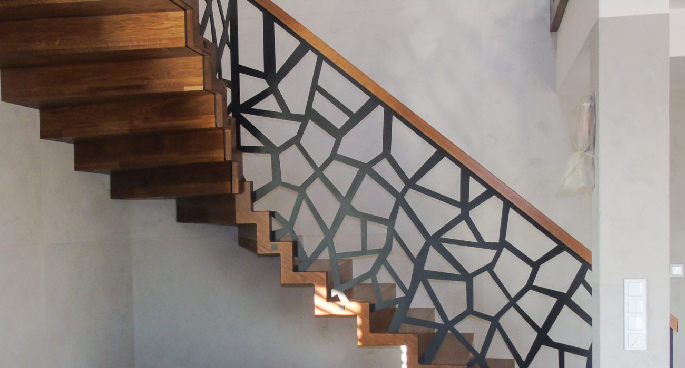
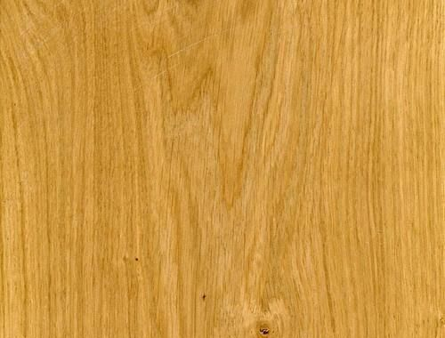
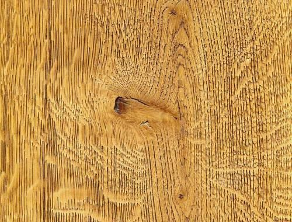
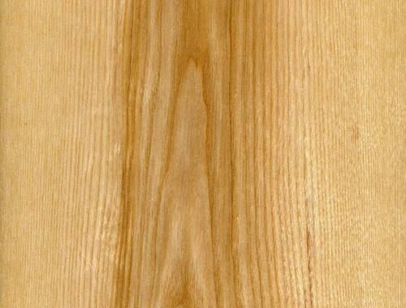
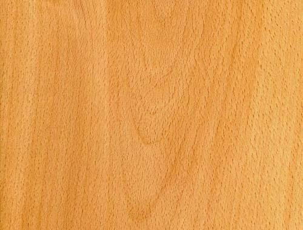
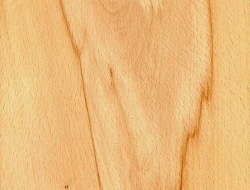
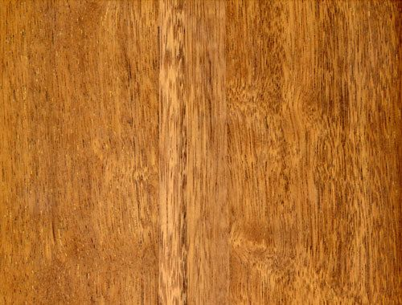
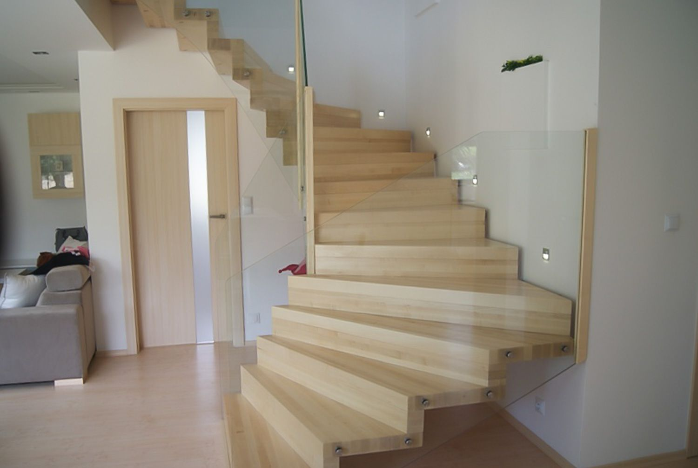

Chocz, Wielkopolska - cała Polska i Niemcy
Drewniane schody szyte na miarę
Projektujemy, produkujemy i montujemy schody na indywidualne zamówienie: dywanowe, policzkowe, bolcowe, siodłane, spiralne i na beton - z dębu, jesionu lub buka.
Rodzaje schodów
Każde schody wykonujemy pod konkretne wnętrze. Dobierzemy konstrukcję do miejsca, stylu domu i sposobu użytkowania. Kliknij, aby zobaczyć zdjęcia wykonanych schodów.
Wykonujemy też schody samonośne: na wangach, na wangach grzebieniowych, policzkowo-siodłane, policzkowo-bolcowe i na słupie centralnym - z drewna, stali lub ich połączenia.
Realizacje
Kilka z wykonanych przez nas schodów. Pełną galerię według rodzajów schodów i wszystkie filmy znajdą Państwo na osobnej stronie.
Filmy z realizacji
Na nagraniu lepiej widać światło na stopniach i detale balustrady. Film uruchamia się po kliknięciu.
Drewno i detale
Pracujemy na najlepszych gatunkach drewna - przede wszystkim dębie, jesionie i buku - i dbamy, aby zachowały swój naturalny kolor. Rodzaj i odcień drewna wybierają Państwo sami, tak jak każdy detal balustrady.
W ofercie detali mamy:
- Poręcze
- Tralki
- Deski i stopnie
- Szkło
- Relingi
- Słupy
- Zakończenia słupów







O firmie
Schody Kaczmarek to firma z Chocza w Wielkopolsce, która projektuje, produkuje i montuje drewniane schody na indywidualne zamówienie. Od ponad 15 lat wykonaliśmy ponad tysiąc schodów - w całej Polsce i w Niemczech.
Najważniejsze są dla nas jakość, dokładność i solidność pracy. Przy każdym zleceniu prowadzimy klienta przez wszystkie etapy:
- Pomiar i doradztwo - przyjeżdżamy, mierzymy i pomagamy wybrać typ schodów oraz drewno.
- Projekt - według Państwa wytycznych i warunków we wnętrzu.
- Produkcja - z wybranego gatunku drewna i detali.
- Montaż - solidny i bezpieczny, w ustalonym terminie.
Co mówią klienci
Doradca przyjechał, wszystko pomierzył, a następnie został mi przedstawiony projekt według moich wytycznych. Polecam!
Grażyna Nowicka
Świetna robota, schody po roku użytkowania wyglądają jak nowe. Kontakt z firmą świetny, bardzo sympatyczny właściciel.
Elżbieta Kujawa
Pan Krzysztof świetnie doradził nam co do wyboru odpowiedniego typu schodów oraz rodzaju drewna.
Magdalena Jakubowska
Kontakt i wycena
Proszę opisać, jakie schody Państwo planują - oddzwonimy i umówimy pomiar.
- Telefon501 552 195661 273 319
- E-mailbiuro@kaczmarekschody.pl
- Adresul. Zapłocie 17A, 63-313 Chocz
- Zasięgcała Polska i Niemcy, m.in. Wielkopolska, Warszawa i Mazowsze, Wrocław